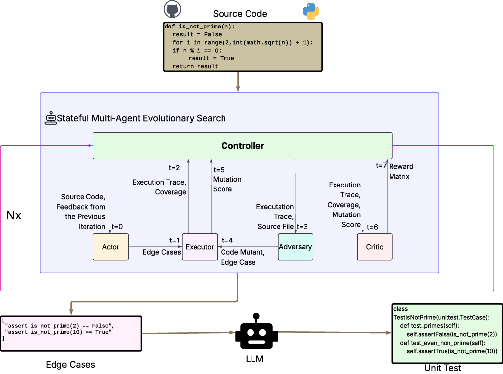
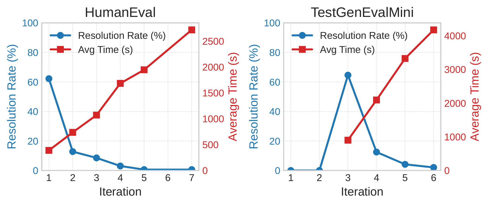

We introduce UT-Evolve, an evolutionary multi-agent framework for repository-level unit test generation. Unlike stateless prompting approaches, UT-Evolve maintains persistent inference-time state across multiple iterations, enabling adaptive test generation strategies that evolve using execution feedback.
The system combines four coordinated agents—Actor, Adversary, Critic, and Executor—within an evolutionary search loop that refines edge cases based on coverage, mutation robustness, and exception signals. Experiments on HumanEval and TestGenEvalMini demonstrate that the approach consistently improves coverage compared to single-step prompting methods. :contentReference[oaicite:1]{index=1}
Most LLM inference pipelines are stateless, meaning reasoning does not persist across calls. However, tasks such as repository-level unit test generation require iterative reasoning and adaptation.
UT-Evolve addresses these challenges through an inference-time evolutionary search.

The system decomposes the problem into two stages:
The search loop maintains persistent state including prior edge cases, coverage scores, mutation signals, and reward history.
R(κ, μ, c) = [αc + β(κ + max(0,(κ − θ)·0.5))] × γμ
The reward integrates:

UT-Evolve consistently improves coverage compared with zero-shot, few-shot, and chain-of-thought prompting strategies across multiple models and evaluation metrics. :contentReference[oaicite:2]{index=2}
UT-Evolve demonstrates that persistent state and evolutionary search can significantly improve unit test generation. The approach enables LLM systems to iteratively refine behaviors using execution feedback, moving toward inference-time learning for software engineering tasks.
@article{ut-evolve-2026,
title={UT-Evolve: An Evolutionary Agent for Unit Test Writing},
author={Anonymous Authors},
booktitle={ICLR},
year={2026}
}